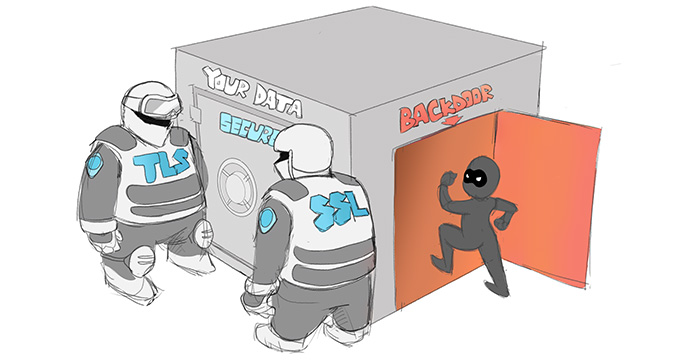

The Introduction of the Internet
It’s now the early 1990s. The World Wide Web has been released by the father of the internet, Tim Berners-Lee, and everyone’s excited about a global network connecting computers being available for free (not including the broadcast cost). No one was as excited as potential hackers, and mathematicians and cryptographers alike shuddered; here’s why. Many people had known for years that DES would not have been sufficient to protect data when it was introduced to the internet as a 40-bit key. There is a rumour that the NSA had foolishly claimed that DES would take 91 years to brute force. Cypherpunks (said mathematicians and cryptographers) were now working to debunk as DES the NSA and NIST (National Institute of Standards and Technology) refused to acknowledge how insecure their mainstream 40-bit key was. They also pushed aside the knowledge that the increase in computational power through the years would lead to devices breaking DES quicker every year (Moore’s law looks at computational power doubling every 2 years).
To prove that the key wouldn’t last long, the cypherpunks factored in increasing computational power to determine the standard’s strength. A strange shift was found here for many new cypherpunks who once only imagined the more robust encryption they seek to apply to everyone’s daily life, would also be a leading tool used by them to prevent spying. Casting our minds back even further, we know that governments have always tried to keep tabs on what its citizens are doing, especially activists. The communications of Martin Luther King, an activist most have heard of, were revealed to have been monitored during his campaign between 1963 to 1968 by both the FBI and NSA. They had to rely on DES to secure both internet data, as well as phone communications using a new (1993) technology developed by the NSA, which did encryption on a chip. Namely the ‘Clipper Chip’, using an encryption standard similar to DES but as a size of 80 bits.
So, in the end, DES could help them remain anonymous at this point, right… right? Wrong. Welcome to the land of government agency backdoors (a backdoor is a bypass to get around a policy or feature either unintentional or intentional) which run rampant as countries try to gain the upper-hand. Citizens and the commercial sector tend to report backdoors for either improving a service or product, collecting large bug bounties or both. Governments, on the other hand, hoard secret backdoors like dragons’ hoard gold; occasionally divulging them, but they usually do not.

While the NSA denies intentionally placing a backdoor in DES with IBM, one of the most straightforward ways this was done was through introducing S-boxes (substitution boxes) which as aforementioned made the algorithm stronger against differential cryptanalysis, but reduced IBM’s original key size (using lucifer’s key) of 128 to the agreed block size of either 48 or 64. This meant that the NSA could use all of its computing power to brute force the keys. In essence, the NSA says that brute-force attacks can’t be considered intentional backdoors, even if this was the reason behind decreasing key sizes, as brute-force attacks can theoretically work against any target, given a certain amount of constant processing speed and a long enough time period.
To put this into the perspective of how broad the NSA is here, we present the perfect summary of this issue by Bruce Schneier, a lecturer at Harvard University and a member of the EFF. “Modern algorithms have a key so long that this is impossible; even if you built a computer out of all the silicon atoms on the planet and ran it for millions of years, you couldn’t do it”. However, some cypherpunks have argued that knowingly making a key size smaller leads to a backdoor process; useful encryption algorithms have both of the following, strong mathematics, and large key sizes. It’s the same reason you won’t find a key below the size of 128 bits, even on some old browsers! From this section, we have gathered that activists such as the cypherpunks didn’t trust the government, and using a standard in which they had a say in and in some of their eyes left a U.S. only backdoor system in which made them trust the encryption standard even less.
“So deCryptMe, what did they do,” you ask? Enter the vast world of PGP or Pretty Good Privacy, released in 1991 by Phil Zimmermann. He mixed the main cryptography methods of hashing (a one-way algorithm that is near impossible to invert) and symmetric-key encryption. Still dramatically used to this day, it is one the easiest ways to send encrypted data as long as you have said person or organisation’s public key. Phil wanted to support cypherpunks and activists of over movements to have communications without the interference or watchful eye of the government.
In an attempt to allow people across the U.S. to avoid big brother, Phil placed his PGP code on a personal FTP server. However, while not Phil’s initial idea to allow PGP to spread outside of the U.S., we find that anything placed on the internet has the risk of being accessed by anyone else in the world. As PGP was now being used outside of the U.S. as well, the U.S. Customs Service for allowing this spread as cryptography was still under the Munitions List. This meant that Phil was now in violation of the Arms Export Control Act; in essence, Phil was being placed under the rules that one exporting military-grade submarines and tanks would face. Even businesses were using PGP during this time, and as long as their PGP messages didn’t leave the country, they were legally allowed to continue using them. Many had made the switch as while DES was secure, the number of adversaries to DES was growing and companies understood that civilians could soon crack civilian grade encryption. Phil’s run-ins with the government continued for numerous years. Organisations and the general public supported him as they cried out for more robust encryption standards. But, the NSA and NIST continued to preach that 40-bit DES was still strong enough. At the same time, local and federal law enforcement echoed cypherpunk’s worst nightmare, weak encryption was pushed through by the government to crack encryptions for criminals. A sentiment that the public shared was that having more robust encryption which in turn made it harder for criminals to access their data was better than having weaker encryption, but law enforcement has a slightly higher chance of catching them.
Written by HarryIsSecured